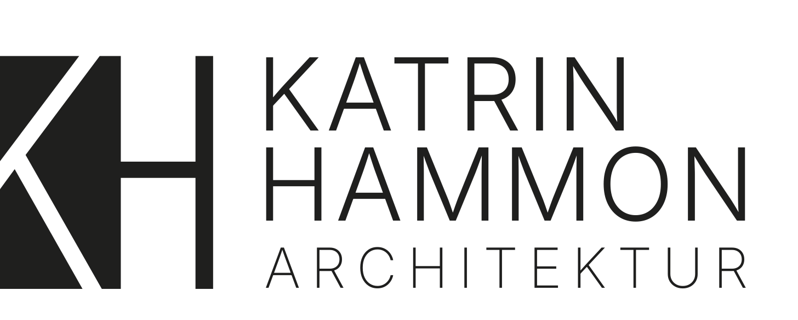
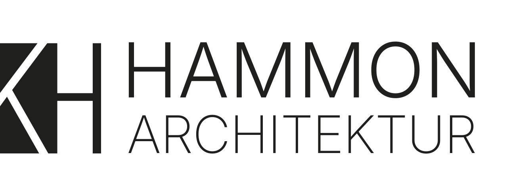
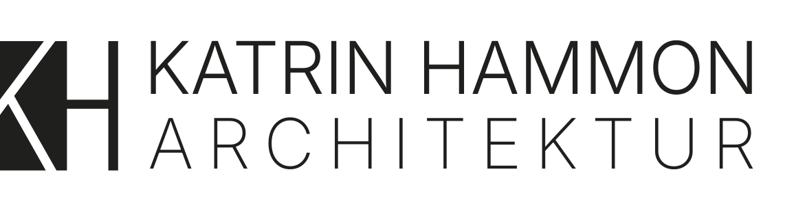
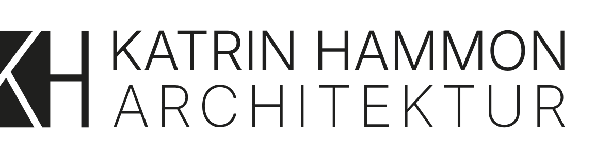
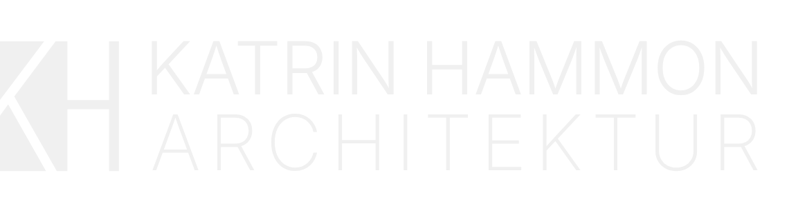

Das KH-Monogramm verbindet Katrins Initialen zu einem architektonischen Zeichen. In drei Varianten verfügbar: V1 (Katrin Hammon, dreizeilig), V2 (Hammon, zweizeilig), V3 (Katrin Hammon Architektur, zweizeilig kompakt). Die Wortmarke nutzt Inter Light, weit gesperrt.
Variante 1 — Katrin Hammon + Architektur (dreizeilig)

Light · Print, helle Flächen

Standard · Website, Social Media
Variante 2 — Hammon + Architektur (zweizeilig)

Light · Print

Standard · Website
Variante 3 — Katrin Hammon Architektur (zweizeilig kompakt)

Light · Print

Standard · Website
Variante 3b — Katrin Hammon Architektur (zweizeilig, breitere Laufweite)

Light · Print

Standard · Website
│
Vertikalen
Reine Senkrechten
╱
Diagonalen
Gerade, keine Kurven
K
Geometrisch
Architektonisch konstruiert
A B
Sperrung
Weit gesperrt
Aa
Light
Inter Light (300)
Logo-Einsatz: Drei Varianten verfügbar. V1 (voller Name) für offizielle Dokumente. V2/V3 für kompaktere Anwendungen. Nie verzerren oder auf unruhigen Hintergründen platzieren. Mindestfreiraum: Höhe des KH-Monogramms auf jeder Seite.
02
Gestalterische Richtung
Neo-Swiss Architectural
Geradlinig, klar, reduziert. Eine Website, die die gleiche Präzision ausstrahlt wie ein guter Grundriss: jedes Element hat seinen Platz, nichts ist überflüssig. Dunkle Flächen schaffen Tiefe und Ruhe, Kupfer setzt gezielte Akzente. Die Gestaltung orientiert sich am Schweizer Stil: strenge Typografie, klare Hierarchie, großzügiger Raum.
Eine Schrift für alles Digitale: Inter ist eine der bestoptimierten Variable Fonts für Bildschirme. Durch ihre neutrale Klarheit und hervorragende Lesbarkeit in allen Größen eignet sie sich sowohl für große Display-Headlines als auch für Fließtext. Die Hierarchie entsteht durch Gewicht, Größe und Spacing. Print-Dokumente (Geschäftspapier, Angebote, Rechnungen) nutzen Segoe UI als Systemschrift für optimale Darstellung in Office-Umgebungen.
Schriftgewichte: Inter Variable Font
K
Inter Bold
Stats, Card-Titles
K
Inter SemiBold
Headlines, Display, Buttons
K
Inter Medium
Zitate, Akzente
K
Inter Regular
Fließtext, Navigation
K
Inter Light
Hero-Subtext, Akzente
Gewählt
Inter (Display + Body)
Katrin Hammon
Freischaffende Architektin
Gute Architektur entsteht im Dialog. Von der ersten Idee bis zur Schlüsselübergabe begleite ich Sie persönlich durch jeden Schritt Ihres Bauvorhabens.
Schriftkonzept: Eine einzige Schriftfamilie für die gesamte Website. Die typografische Hierarchie entsteht durch Gewicht und Größe – weniger Schriften, mehr Ruhe. Inter ist vielseitig, klar und modern, optimiert für Bildschirmdarstellung und bietet mit 9 Gewichten plus Italics maximale Flexibilität.
Print-Schrift: Geschäftspapier, Angebote und Rechnungen verwenden Segoe UI als Systemschrift. Grund: maximale Kompatibilität in Word- und PDF-Workflows, ohne zusätzliche Font-Installation. Segoe UI teilt die humanistisch-geometrische Formensprache von Inter und fügt sich nahtlos in das Corporate Design ein.
Typografische Skala
Display
Hammon
Section-Title
Ein Projekt. Eine Architektin.
Hero-Sub
Persönlich, strukturiert, kreativ.
Stat-Num
500+
Body/Intro
Gute Architektur entsteht im Gespräch.
Body
Architektur bedeutet Verantwortung für Raum und Umwelt.
Fließtext
Montag bis Freitag, 9 bis 17 Uhr
Overline
Freischaffende Architektin
Card-Title
Neubau und Entwurf
Nav-Link
Über mich
Button
Erstgespräch vereinbaren
05
Hero-Bereich
Der erste Eindruck. Große Typografie (Inter 600, clamp 54–88px) trifft auf ein freigestelltes Portrait. Die Kupferlinie markiert den Beginn. Overline + Name + Subtext + CTA-Button bilden die visuelle Hierarchie. Architektonisches Hintergrundmuster (Raster 80px, Kupfer bei 4.5 % Opazität).
Freischaffende Architektin
Katrin Hammon
Persönlich, strukturiert, kreativ. Mit über 20 Jahren Erfahrung begleite ich Ihr Bauvorhaben von der ersten Idee bis zur Genehmigung.
Portrait (Blickkontakt, dunkler Hintergrund)
06
Seitenstruktur
Sieben Bereiche mit Hell-Dunkel-Wechsel. Helle Sektionen (Cream/Warm) für About, Services und Prozess. Dunkle Sektionen (Black) für Hero, Philosophie und Kontakt. Der Kontrast schafft Rhythmus und Orientierung. Section-Padding: 120px vertikal.
01
Dunkel
Hero
Name, Portrait, Overline, CTA.
02
Hell
Über mich
Intro-Text, Qualifikation, Credentials.
03
Hell
Statistiken
21 Jahre, 500+ Projekte, 1 Ansprechpartnerin.
04
Dunkel
Philosophie
Zitat, Text, Features, Portrait.
05
Hell
Leistungen
Cards, § 35 Feature-Block.
06
Hell
Prozess
3 Schritte, Step-Cards.
07
Dunkel
Kontakt
Portrait, Info, Formular, Footer.
07
Buttons
Auf dunklen Flächen
Auf hellen Sektionen
Regeln: Maximal ein auffälliger Button pro sichtbarem Bereich. Keine abgerundeten Ecken. Schrift: Inter 600, 12px, 1.5px Sperrung, Versalien. Padding: 16px 36px. btn-copper: Kupfer-Hintergrund, Hover mit translateY(-2px) + Box-Shadow. btn-outline: 1.5px Kupfer-Border, Hover füllt Fläche. btn-dark: text-dark Hintergrund, Hover surface-4.
08
Zitat
„Es ist wie es ist, aber es wird, was Du daraus machst.“
Katrin Hammon
09
Animationen (Hover für Vorschau)
Jede Animation hat einen Grund. Die Website entfaltet sich langsam und kontrolliert. Alle Animationen nutzen die gleiche Easing-Kurve: cubic-bezier(0.16, 1, 0.3, 1). IntersectionObserver triggert Reveal-Animationen beim Scrollen.
Kupferlinie
@keyframes kupferline
scaleX(0→1) 0.8s
Fade & Rise
opacity + translateY(28→0)
0.7s ease-out
Architektur
Hero-Line
scaleX(0→1), opacity 0.25
1.2s ease-out
500
CountUp Glow
text-shadow Kupfer-Glow
statGlow 1.5s
10
Abstände
Architektonische Proportionen: 8px als Grundeinheit. Container max-width: 1260px mit 24px Padding. Section-Padding: 120px vertikal. Grid-Gaps variieren je nach Sektion (24px bis 72px).
8px
Mikro-Abstand
16px
Innerhalb eines Blocks, Form-Gaps
24px
Container-Padding, Card-Gaps
28px
Step-Gaps, Card-Body-Padding
48px
Stat-Item-Padding, Section-Title-Margin
64px
Philosophy-Grid-Gap, Services-Top-Margin
72px
About-Grid-Gap, Contact-Grid-Gap
120px
Section-Padding (vertikal)
11
Bildsprache
Die Bilder fügen sich nahtlos in die dunkle, reduzierte Gestaltung ein. Portraits in Schwarz-Weiß, Interieurfotos leicht entsättigt. Keine grellen Farben, keine Stockfotos.
■
S/W Portraits
Arbeitsszenen, professionell, authentisch
■
Interieur
Leicht entsättigt, dunkle Töne, modern
✎
Skizzen & Pläne
Grundrisse, Bestandsskizzen, Entwürfe
Bildbehandlung: Portraits werden in S/W konvertiert (wie die vorhandenen Arbeitsfotos). Interieurbilder werden leicht entsättigt. Skizzen und Pläne erscheinen als dezente Hintergrundelemente oder in reduzierten Grautönen. Alle Bilder erhalten einen minimalen dunklen Overlay für harmonische Einbindung in die dunklen Flächen.
12
Raster
Flexibles Grid-System. Container max-width: 1260px mit 24px Padding. Sektionen nutzen CSS Grid mit variablen Spalten und Gaps. Responsive Breakpoints: 1024px (Tablet), 768px (Mobile), 480px (Small).
1
2
3
4
5
6
7
8
9
10
11
12
Hero Text
Hero Bild
Leistung
Leistung
Leistung
Textblock
13
Sprache & Ton
Ansprache
Besucher werden mit Sie angesprochen. Katrin spricht in der Ich-Form. Der Ton ist professionell und warm, nie steif oder distanziert.
Beispieltext
„Von der ersten Idee bis zur Baugenehmigung begleite ich Sie persönlich. In einem kostenlosen Erstgespräch lernen wir uns kennen und ich erfahre, was Ihr Projekt braucht.“